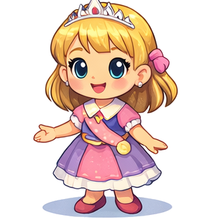

Princess Academy Challenge
Become a Certified Royal Scholar!
The Royal Library
Question 1 of 5
What is the question?
Reading Complete!
You scored:
0 out of 5

Challenge Complete!
You scored 8 out of 10!
Reading: 4/5 | Math: 4/5
Gold Medal!